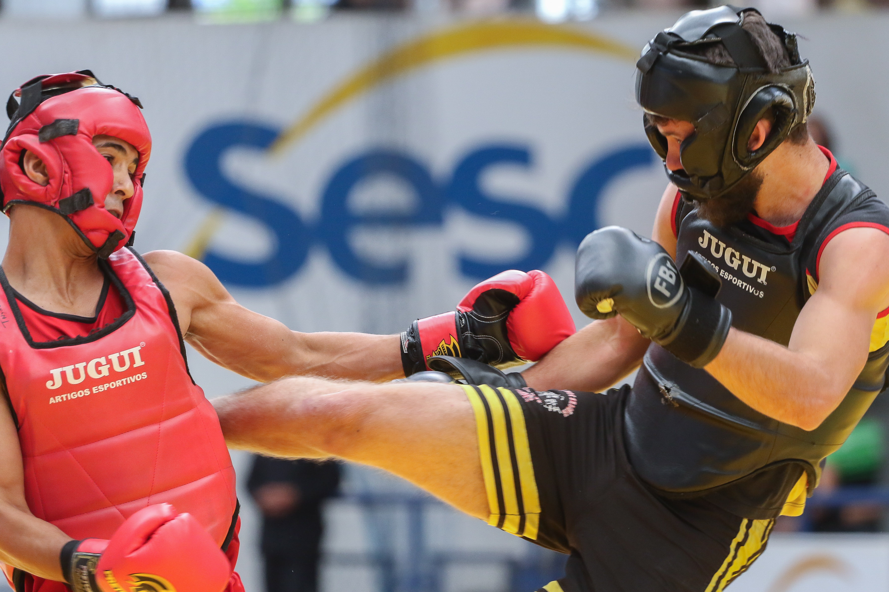

Sports
Chinese sports, in contrast to Western sports, place a greater emphasis on harmonious beauty and beauty of connotation, which highlight the cadence and rhythm of sports.

Archery
Chinese archery has played an important role in Chinese society for millennia. In particular, archery was featured prominently in ancient Chinese culture and philosophy: it was one of the Six Noble Arts of the Zhou dynasty. Archery was not just a sport, but also a means of developing character and expressing a polished personality. Back then, archery was considered rulership and nobility. Skill with the bow was expected to be displayed in various archery competitions. Warriors, senior officials and administrators had to prove their ability at archery, which was also thought to reveal the person's moral character.
Sanda
Sanda, which literally means “free fighting”, emerged in the 1920s in China. It contains a mix of techniques from various Chinese arts like Kung Fu, Lei Tei, Shuai Jiao; it combines boxing and full-contact kickboxing, which includes close range and rapid successive punches and kicks, with wrestling, takedowns, throws, sweeps, kick catches, and in some competitions, even elbow and knee strikes. In modern times, Sanda is among the most popular combat sports in the eastern world and countries like Russia, China and Armenia.